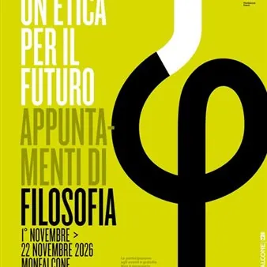

dom 1 nov · dalle 10:30
Un'etica per il futuro - La politica davanti alle sfide dell’IA
Monfalcone torna a interrogarsi sui temi della filosofia, della consapevolezza di sè e dell'attualità con la 9^ edizione della rassegna “Un’etica per il futuro”, in programma dal 1° al 22 novembre 2026. Un ciclo di quattro appuntamenti dedicato al confronto, all'ascolto e…
 Indicazioni
Indicazioni
- Costi e prenotazioni
- Costo non indicato · Prenotazione non indicata
- Programma
- Programma da verificare. Apri la fonte ufficiale per orari e possibili aggiornamenti.
- In caso di maltempo
- Nessuna indicazione specifica pubblicata.
- Note
- Acquisito automaticamente dalla fonte.
L’EVENTO
Descrizione completa
Monfalcone torna a interrogarsi sui temi della filosofia, della consapevolezza di sè e dell'attualità con la 9^ edizione della rassegna “Un’etica per il futuro”, in programma dal 1° al 22 novembre 2026.
Un ciclo di quattro appuntamenti dedicato al confronto, all'ascolto e all'approfondimento su importanti questioni etiche e sociali, che interessano tutta la collettività.
Gli incontri si svolgeranno nei giorni 1,8,15 e 22 novembre 2026, la domenica mattina, alle ore 10:30; gli appuntamenti dell'1,8 e 22 novembre saranno ospitati nella Sala Conferenze della Biblioteca comunale, mentre quello del 15 si svolgerà in Teatro comunale.
La rassegna si aprirà domenica 1° novembre con l'incontro dal titolo "La politica di fronte alle sfide dell’intelligenza artificiale", che vedrà gli esperti Andrea Zhok e Gabriele Giacomini affrontare il tema dell'IA, del suo utilizzo sempre più diffuso e complesso e delle conseguenti ripercussioni a livello economico, lavorativo e nella vita di tutti i giorni.
Ingresso libero e gratuito.
"Un'etica per il futuro" è promossa dal Comune di Monfalcone in collaborazione con il Festival Mimesis, una delle manifestazione di divulgazione e ricerca filosofica più importanti a livello nazionale, la Biblioteca comunale, il Teatro comunale di Monfalcone e Io Sono Friuli Venezia Giulia.
Per scoprire tutti gli appuntamenti: https://www.comune.monfalcone.go.it/.../unetica-per-il...
Per maggiori informazioni:
tel. 338 3772420 (anche WhatsApp)
e-mail: biblioteca@comune.monfalcone.go.it
IL PROGRAMMA
Programma e orari
Appuntamenti raccolti dalle fonti elencate. Dove manca un orario, non è ancora disponibile in questa scheda.
Programma pubblicato
- Dal 2026-11-01 al 2026-11-01
INFORMAZIONI UTILI
Prima di partire
- Controllare la fonte prima di partire.
ORGANIZZAZIONE